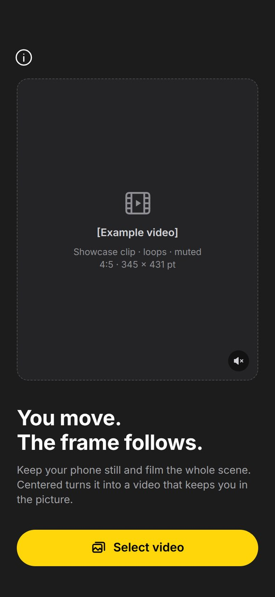
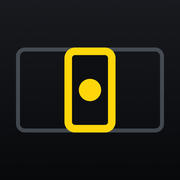
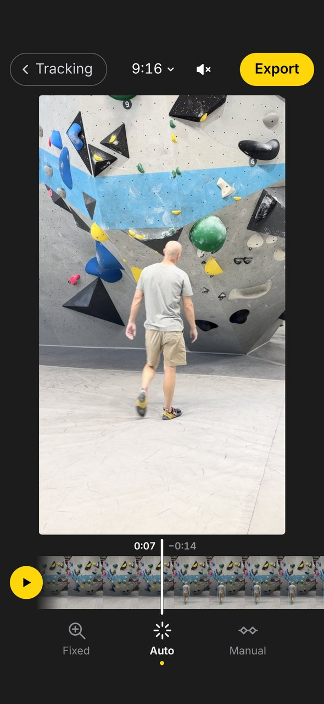
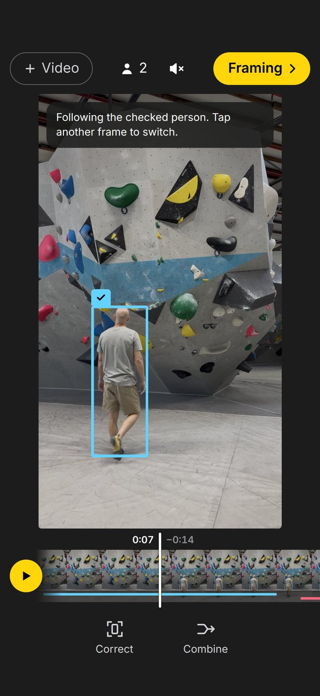
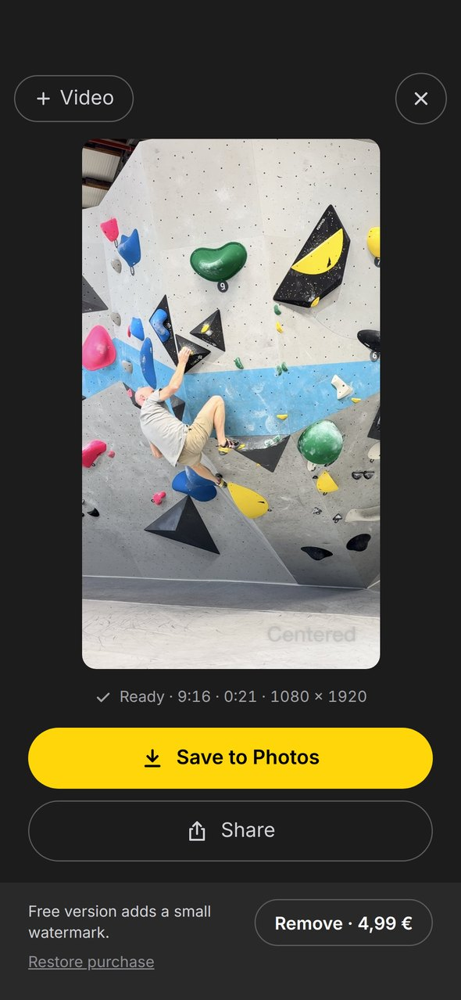

Pick a clip
Choose a video from your photo library. Clips you worked on before wait under Recent.


CenteredKeep your phone still and film the whole scene. Centered turns the clip into a video that keeps you in frame, with a calm camera move that follows along.

However you film it – the frame moves with you.
For tall movement like climbing or pole. The whole wall in the shot, you up close in the result.
For wide movement like dance or martial arts. The whole floor in the shot, you in the middle of the result.
Finding the people takes a moment once. After that, every change shows up right away.
Choose a video from your photo library. Clips you worked on before wait under Recent.

Centered finds the people and follows the main one. Wrong frame? Correct it, or combine two tracks of the same person.

Pick the format and how the zoom behaves, then save to Photos or share.

Drag the frame where it should be. Your points override the automatic detection.
If someone turns away and comes back as a new track, combine them into one.
Keep one distance, follow the size of the person, or set the zoom yourself at chosen moments.
Choose how smoothly the zoom changes. Calm looks like someone holding the camera.
Reels, feed, square or wide – switch any time and the preview follows.
Detection and corrections stay on your iPhone. Reopen a clip from Recent – no second analysis.
Centered analyses and renders everything on the device. Nothing is uploaded, there are no accounts and no usage data is collected. Photo access is only used to load the clip you pick and to save the finished one. The app has no networking code at all. Read the privacy policy
Prices in other regions are set by the App Store. Restore a purchase any time in the app’s info screen.
An iPhone app that turns a static shot into a video where the camera follows the person. Built for the phone that stands still in every gym, studio and skatepark – and it does all of its work on the device.
Screenshots and a preview video follow at launch. For material from a specific discipline, just ask by email.